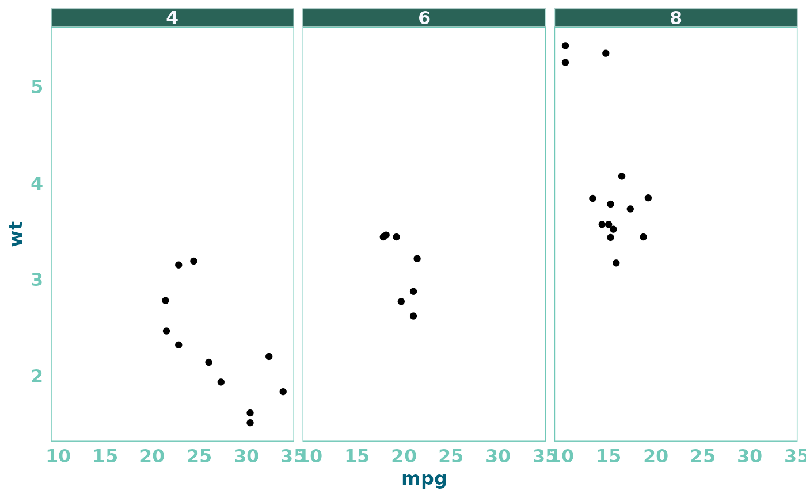

A flexible and customizable theme function for creating polished and
minimalistic plots using ggplot2. The theme_cleaner function provides
various options to control the appearance of plot elements, including font
styles, sizes, colors, axis lines, grid lines, legend, title, subtitle,
captions, and facet appearance. The theme is highly customizable, allowing
for the creation of visually appealing and clean plots.
Usage
theme_cleaner(
base_size = 12,
base_family = "sans",
base_color = "#70C8B8",
base_color_title = "#03617A",
title_text_size = ceiling(base_size * 1.1),
subtitle_text_size = ceiling(base_size * 1.05),
caption_color = "#19405B",
legend_position = "top",
vjust_title = 0,
vjust_subtitle = 0,
hjust_title = 0,
hjust_subtitle = 0,
axis_lines = FALSE,
facets = FALSE,
facet_text_size = base_size,
draw_panel_border = FALSE,
...
)Arguments
- base_size
Numeric. Default font size for plot elements. Defaults to
12.- base_family
Character. Font family used for text in the plot. Defaults to
"Work Sans".- base_color
Character. Hex color code for primary plot elements (e.g., axis text, legend text). Defaults to
"#70C8B8".- base_color_title
Character. Hex color code for plot title and legend title text. Defaults to
"#03617A".- title_text_size
Numeric. Font size for plot title text. Defaults to
base_size * 1.1.- subtitle_text_size
Numeric. Font size for plot subtitle text. Defaults to
base_size * 1.05.- caption_color
Character. Hex color code for plot caption text. Defaults to
"#19405B".- legend_position
Character. Legend position on the plot. Accepts "top", "bottom", "left", or "right". Defaults to
"top".- vjust_title
Numeric. Vertical justification of the plot title. Defaults to
0.- vjust_subtitle
Numeric. Vertical justification of the plot subtitle. Defaults to
0.- hjust_title
Numeric. Horizontal justification of the plot title. Defaults to
0.- hjust_subtitle
Numeric. Horizontal justification of the plot subtitle. Defaults to
0.- axis_lines
Logical. If
TRUE, axis lines are drawn inbase_color; otherwise, they are hidden. Defaults toFALSE.- facets
Logical. If
TRUE, additional formatting for facet plots is applied. Defaults toFALSE.- facet_text_size
Numeric. If
facets = TRUE, size formatting for facet text (strip.text) is applied. Defaults tobase_size.- draw_panel_border
Logical. If
TRUE, a border is drawn around panels in facet plots. Defaults toFALSE.- ...
Additional arguments passed to
ggplot2::themefor further customization.
Details
The function customizes common plot elements like axis text, titles,
subtitles, captions, legend, and facet labels. It is designed to work with
ggplot2 plots, providing a clean and professional look with minimal
styling. You can adjust various aesthetic features such as font size, color,
and legend position for maximum control over the appearance.
Examples
# Create a ggplot2 plot with the theme_cleaner theme
library(ggplot2)
ggplot(mtcars, aes(x = mpg, y = wt)) +
geom_point() +
theme_cleaner(
base_size = 14,
title_text_size = 16,
legend_position = "bottom"
)
# Customize facet plots with theme_cleaner
ggplot(mtcars, aes(x = mpg, y = wt)) +
geom_point() +
facet_wrap(~cyl) +
theme_cleaner(facets = TRUE,
facet_text_size = 12,
draw_panel_border = TRUE
)
